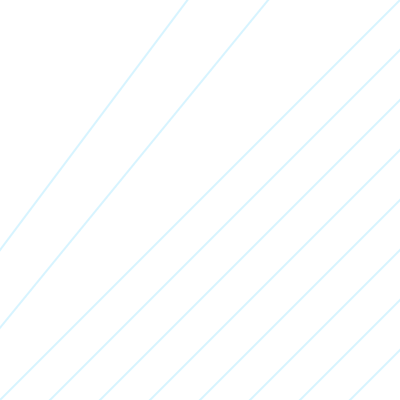

The storm is coming.
Will you bond the light?
Somewhere on the Shattered Coast, gemhearts are cracking open early, chasmfiends stir before their season, and ordinary people are waking up bonded to spren they don't understand. Oathbound follows one warband of the newly Radiant as they're pulled into a war that started centuries before they were born.
Set in a world inspired by Brandon Sanderson's Stormlight Archive. Fan-made, non-commercial, for our table only.

A world shaped by storm and stone
Everything on Roshar grows a shell, roots itself against the wind, or dies. Highstorms scour the continent every few days, carving the Shattered Plains into a maze of chasms and plateaus, and charging spheres of infused crystal with the stormlight that powers everything from lamps to Radiant oaths.
For centuries the old magic slept. Now Shardblades are waking, ordinary people are hearing spren speak for the first time in generations, and the warcamps fighting over the plains are starting to realize their war is older, and stranger, than anyone in command wants to admit.
Timeline
A running summary of what's happened so far — useful for catching up players who missed a week, and for remembering the promise nobody's paid off yet.
Before the storm
The table built their warband, set expectations for tone and safety, and decided how their characters know each other before the first spren ever spoke.
What the chasm gave up
A routine gemheart run goes wrong when the chasm floods early. Someone hears a voice that isn't there — and it isn't the storm.
The warcamp takes notice
Word of an oath sworn in the chasms reaches the highprinces. Not everyone is happy a new Radiant just complicated the chain of command.
To be written
Add each new session here after you play it, most recent at the bottom of the list.